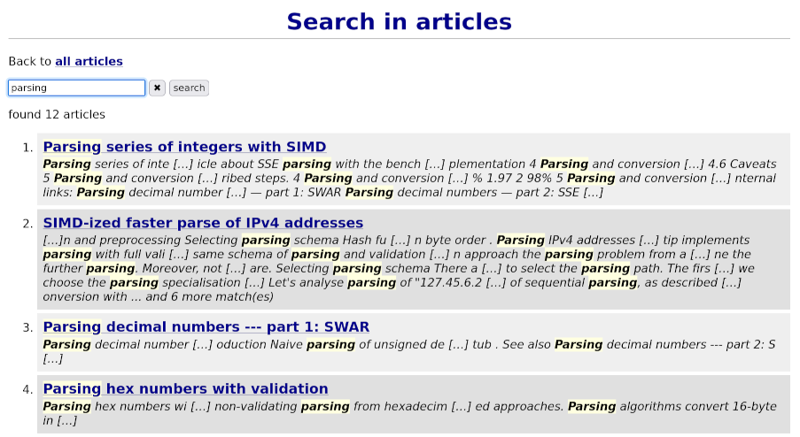

Building full-text search in Javascript
| Author: | Wojciech Muła |
|---|---|
| Added on: | 2025-01-07 |
Introduction
I dedicated the last few days of 2024 on refreshing my website. The project started around 2002, when the Internet was not widespread, there was no GitHub, Wikipedia or anything we know right now. Thus the website served also as a hosting platform for my open-source software.
I created custom python software to maintain both the articles and software. In the meantime things evolved. I started to write my texts in English, and publish them more in a blog style (although, I'm not a fan of the term "blog"), also GitHub allowed to easily distribute software. At some point of time my fancy system for static website become more cumbersome than helpful.
The decision was simple: drop the old build system, create a new one, uncomplicated and tailored to my current needs — focus only on publishing articles. A wise decision I made 20 years ago was picking reStructuedText to write texts. I prefer it over markdown. Not to mention that ReST allows to easily extend itself, which I found extremely handy.
Long story short, the new system allowed me to introduce tags, to maintain texts in draft mode and, last but not least, to let make perform all boring tasks.
But with the new build system, a new idea appeared: "how about searching?".
Full-text search
Text algorithms is something I enjoy, and had some experience with them. The first objective was obvious: no server-side programs! The website lives on my friend's servers, and I don't want to cause any troubles. (From time to time I grep the logs and keep seeing people trying to open wp-admin panel, or similar URLs.)
Thus I needed a client-side solution. Quick googling for existing projects yield nothing that caught my attention. I decided to write from scratch everything, not use WASM (it was tempting, TBH) and not even use jQuery.
The workflow I designed is quite simple (and fully automated, of course):
- The reStructuedText comes with tool converting .rst files into XML.
- Plain text is extracted from XML files using a python script.
- Then texts are indexed, and the index along the plain text is exported into JavaScript structures — something what I called "a database".
- The website loads that prepared dataset plus some vanilla JavaScript code doing processing of user queries and displaying results.
Indexing
Indexing is solely based on trigrams. A trigram is a sequence of three letters; for instance the word "letter" contains the following trigrams: "let", "ett", "tte" and "ter".
The trigrams approach is language agnostic, and also allow to catch partial matching. For example query "conve" would yield "convex" and "convert" matches.
The process of indexing builds a map: trigram => set of document IDs having this trigram. Trigrams are always in lowercase and never contain spaces.
Searching
When we're searching, a query string is first split into words. Then each word is expanded into trigrams and the set trigrams is used to query the index.
For each trigram we get the set of document IDs and calculate intersection with the current set of IDs. If some trigram does not exist at all, we have instantly zero hits.
If the final set of IDs is not null, we search words in (lowercase) text of articles and also in their titles.
Searching results are weighed using three factors:
- whether all words were found in given document or not;
- whether there's hit in the title;
- how many hits are there in text.
It seems to quite a good solution, although for sure is not perfect.
Closing words
First of all, I'm really surprised how pleasant was writing in JavaScript. Maybe it is a matter of maturity, but I didn't find anything blocking my progress. There's plenty of documentation, and the latests JavaScript versions offer a lot of nice features (like sets and maps).
Probably I bumped into some JS odds, but... I used to be a professional C++ developer, JS is normal to me.
Trigram searching is simple to implement and yields good results.
I was trying to compress the text, but it appeared that the server already sends gzipped JS files. This removed more complexity from the flow.